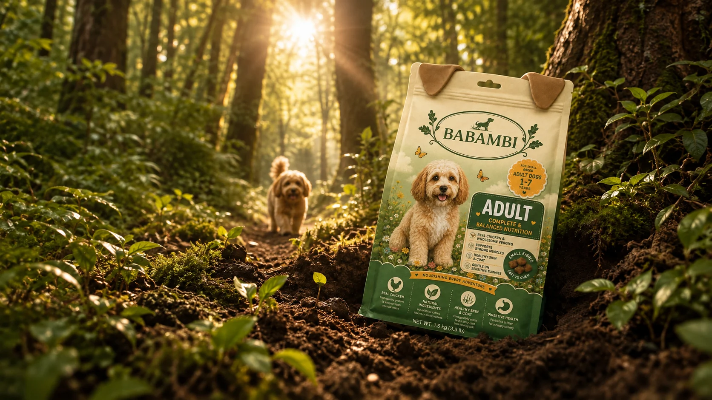
Overview
반려동물 간식이라는 포화된 시장에서, 제품이 아니라 ‘먹이는 사람의 마음’을 앞에 두는 브랜드로 만들었습니다.
My Role
브랜드 기획, 아이덴티티, 패키지, SNS 콘텐츠, 웹 디자인, 퍼블리싱까지 전 과정을 혼자 진행했습니다.
Build
랜딩 · 브랜드 스토리 · 제품 목록 · 제품 상세 · 레시피 · 이벤트 섹션. 한 페이지에서 스크롤로 이어지는 구조로 만들었습니다.
Stack
- HTML
- CSS
- React
- Vite
- Motion
Brand Identity
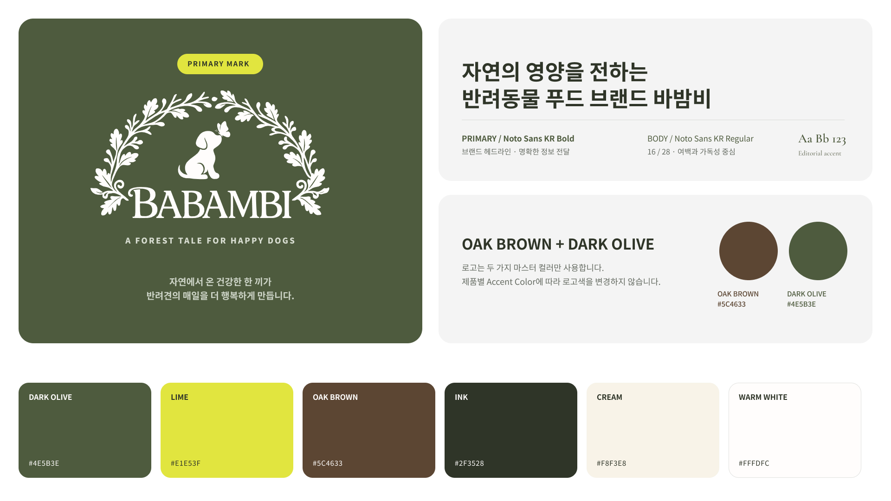
Package
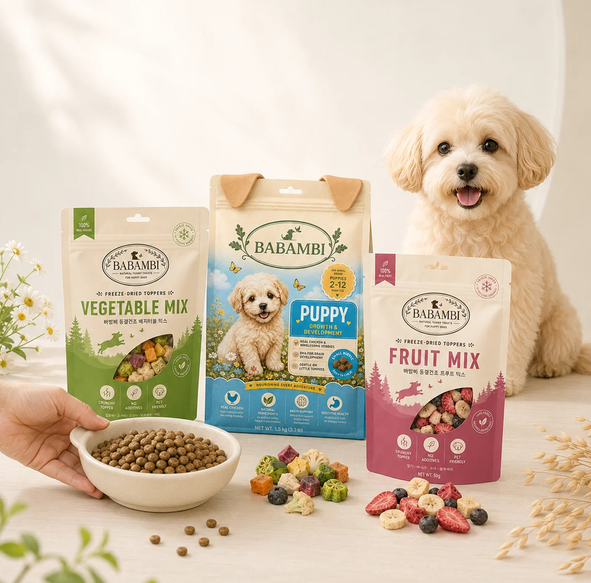
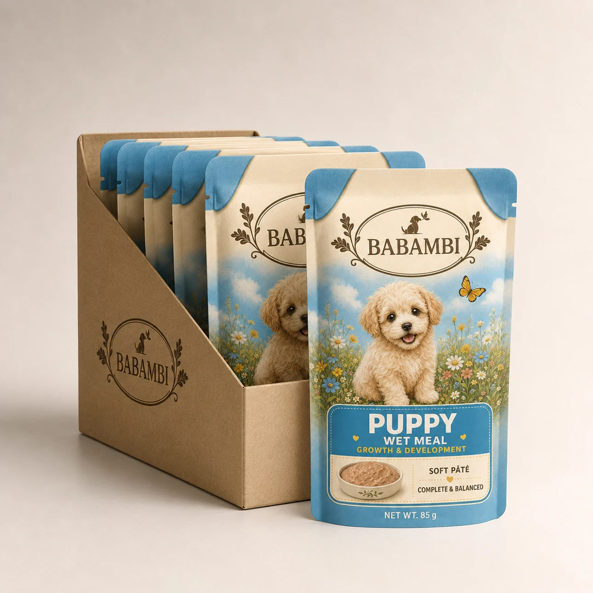
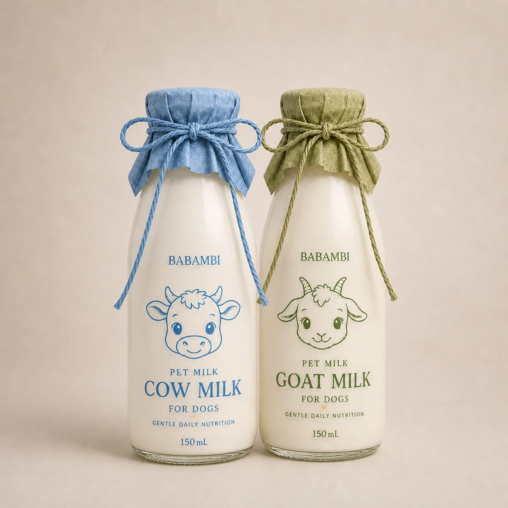
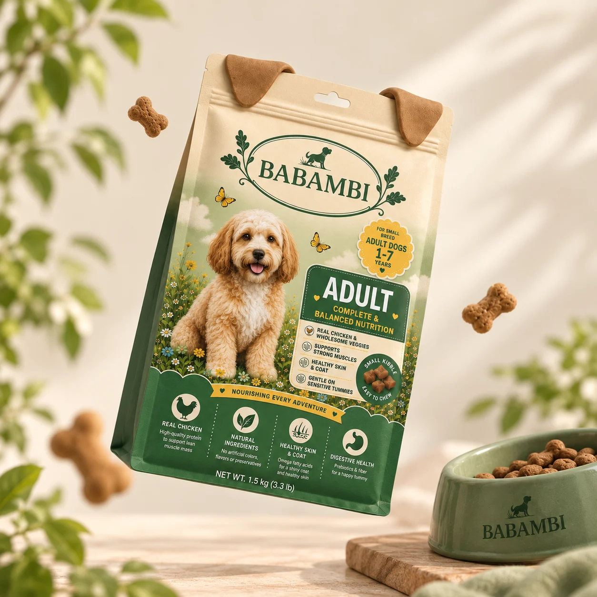
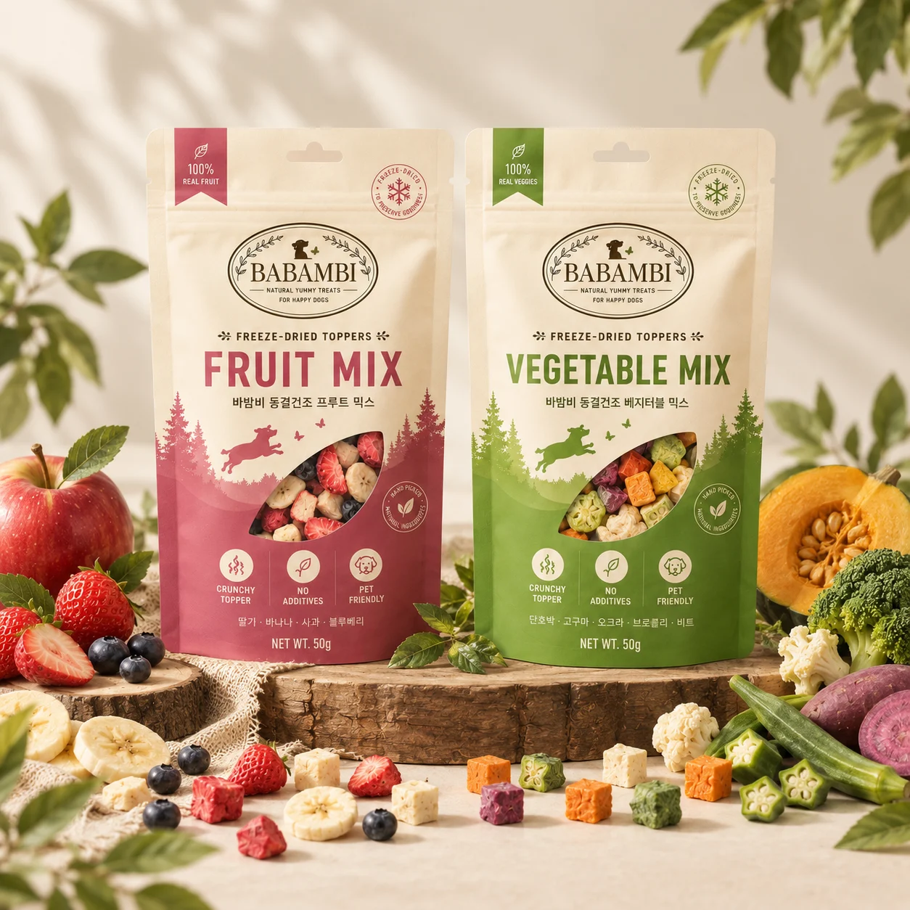
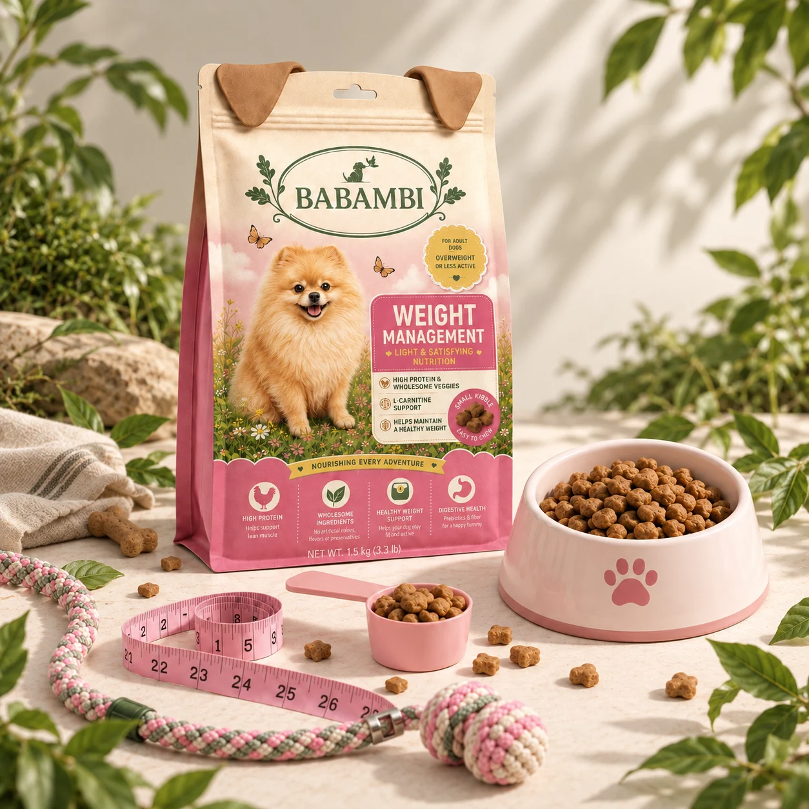
SNS Content
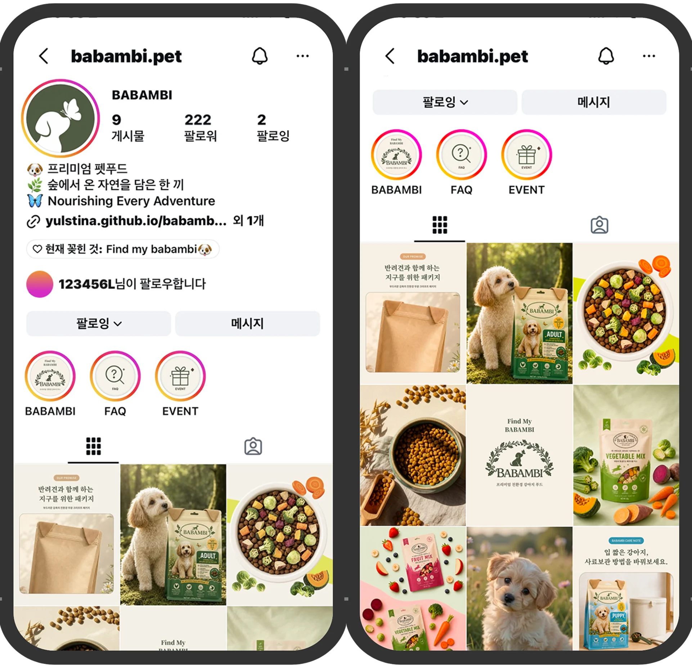
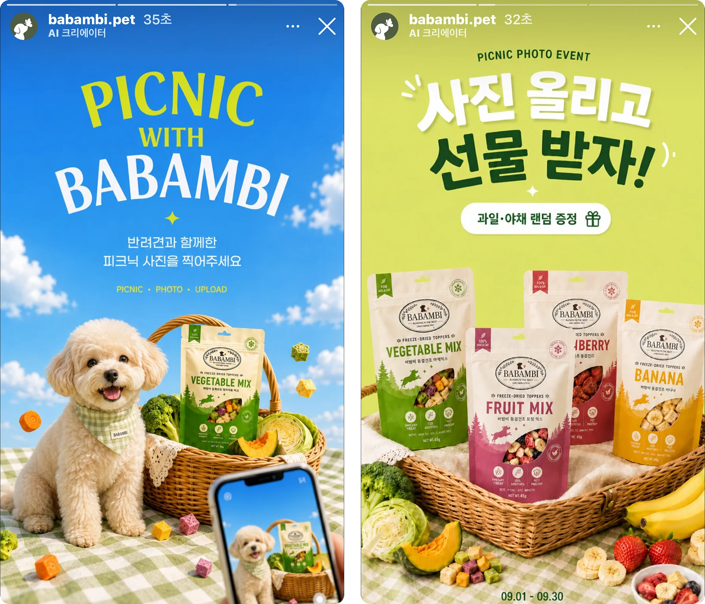
Store & Detail Page
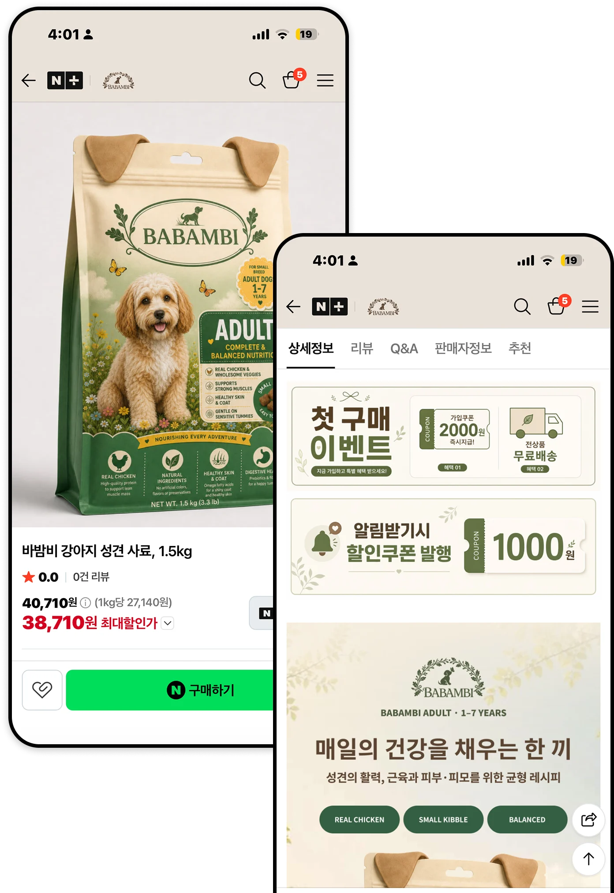
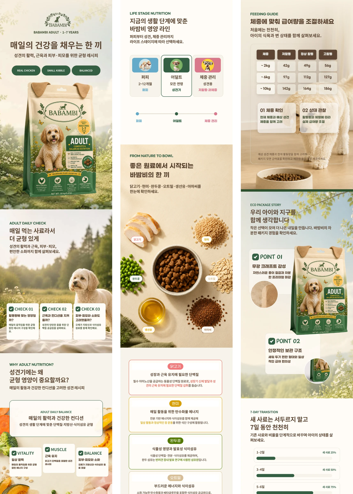